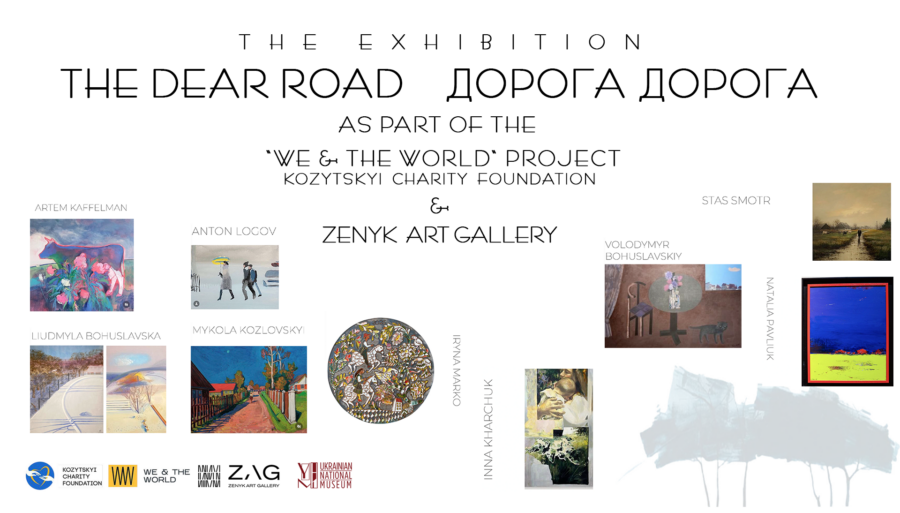

The Dear Road
The exhibition “The Dear Road” explores the symbolic meaning of roads as metaphors for life’s journey — from childhood to adulthood, through joy, struggle, love, and discovery. Among all life’s paths, the road home stands as the most sacred, representing warmth, belonging, and love. Today, for Ukrainians, this symbolism takes on a deeper resonance as they fight for the ultimate road — the path to peace, freedom, and the preservation of their homeland. The exhibition invites viewers to reflect on their own life journeys, the roads that have shaped them, and the ones that lead them home.
The exhibition will be presented by Krystyna Berehovska.